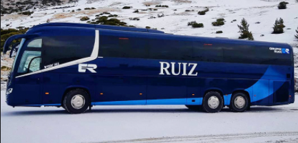
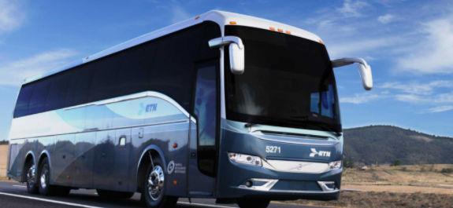

Viaja a tu manera
Estaciones de autobuses en España
Las ciudades y pueblos en España suelen contar con una estación de autobuses principal con llegadas y salidas frecuentes de autobuses que realizan trayectos de media y larga distancia. En el caso de grandes ciudades o poblaciones, cuentan con un gran intercambiador de transportes que incluye la estación principal de tren y de autobús en el mismo edificio o dos estaciones diferenciadas para cada tipo de transporte.
En cualquier momento y lugar
Rutas y circuitos por España en autobús
Diseñar tus propios circuitos de autobús para tus vacaciones con Trainline es tarea fácil. Nuestra herramienta de búsqueda de billetes te permite encontrar horarios y posibles rutas tanto para viajar por España como por Europa en cuestión de segundos.